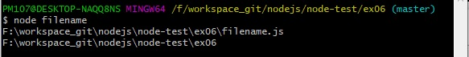

노드에서는 파일 사이에 모듈 관계가 있는 경우가 많아 현재 파일의 경로나 파일명을 알아야 하는 경우가 있습니다.
노드는 __filename, __dirname이라는 키워드로 경로에 대한 정보를 제공합니다.
파일에 __filename, __dirname을 넣어두면 실행 시 현재 파일명과 파일 경로로 바뀝니다.
__filename과 __dirname을 사용해봅시다.
console.log(__filename);
console.log(__dirname);

경로는 여러분의 경로와 다를 것입니다.
또한 윈도가 아니라면 \ 대신 /로 폴더 경로가 구분될 수 있습니다.
이렇게 얻은 정보를 사용해서 경로 처리를 할 수도 있습니다.
하지만 경로가 문자열로 반환되기도 하고, \나 / 같은 경로 구분자 문제도 있어 보통은 이를 해결해주는 path모듈(3.5.2절 참조)과 함께 씁니다.